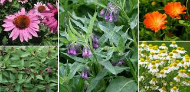
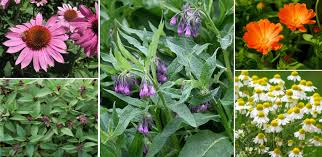

De sanatate!

De sanatate!

Ghicitori!
-
Într-un pomişor Arde-un focuşor! (ardeiul iute)
-
Sus pe coama munţilor, Munţilor, cărunţilor, Stă voinicul cel ţepos Veşnic verde şi frumos. (bradul)
-
Într-o cuşcă mulţi căţei, Toţi sunt albi şi rotofei - Mama-i pune la mujdei! (căpăţâna de usturoi)
-
Într-o casă mică, Cât un ou de bibilică, Locuiesc o mie Şi-n pământ învie. (capsula de mac)
-
Miezul e floare spumoasă, Iar în jur frunze de varză! (conopida)
-
Cine-i munteanul fălos Care-aruncă jir pe jos? (fagul)
-
Ou de lemn (nu-i nucă) Aşezat în cupă, De-l pui la rodit Naşte un voinic, Cu plete în vânt, Vesel fremătând. (ghinda)
-
Pare că-i un pătrunjel, Fiindcă-i alb, la fel ca el; Când îl guşti, te strâmbi, tuşeşti Şi îndată-l şi ghiceşti! (hreanul)
-
Patru fraţi îngemănaţi Într-un cojoc îmbrăcaţi. (miezul de nucă)
-
Ce copac stufos şi-nalt Înfloreşte-n luna mai Şi dă floare pentru ceai? Cine este, l-aţi aflat? (teiul)
-
Ce e verde şi nu mişcă, Dar dac-o atingi te pişcă? (urzica)
-
Zeci de umbreluţe mici, S-au unit să fac-o floare, Dar trecu vântul pe-aici Şi le risipi în zare. (păpădia)